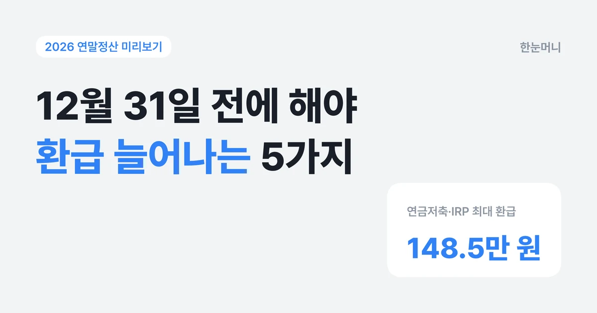
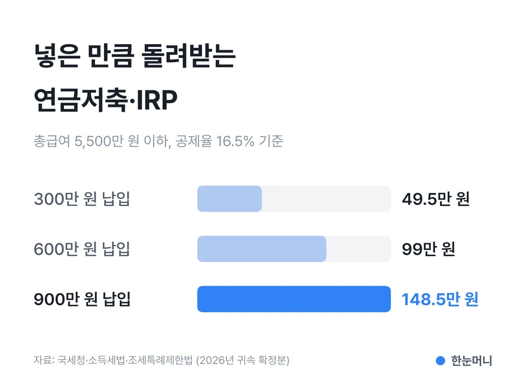
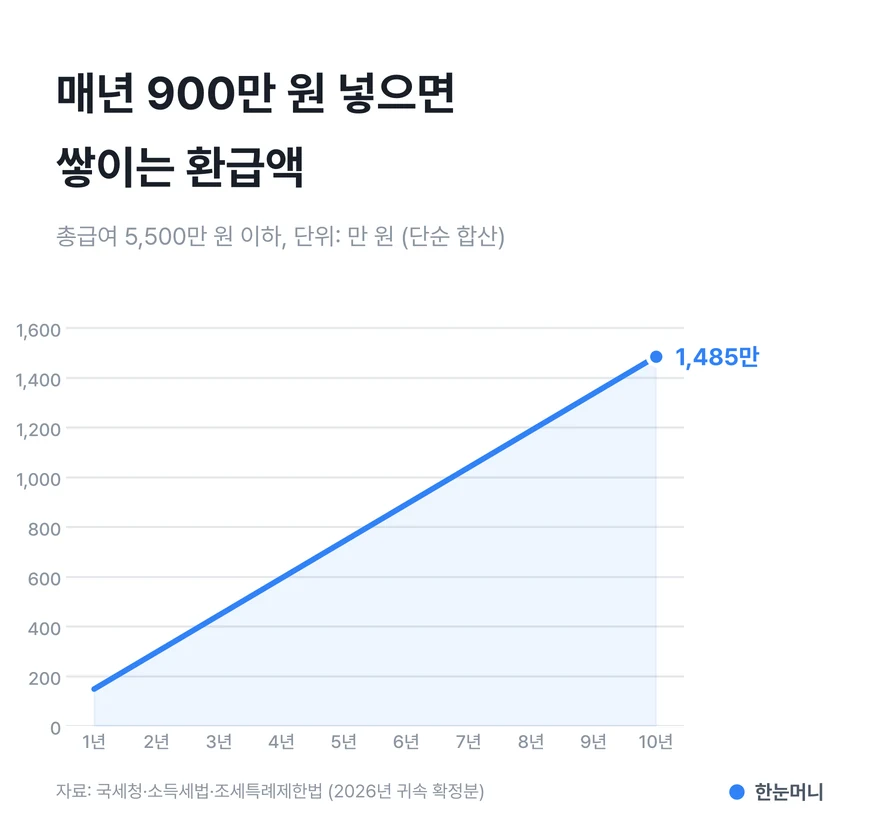
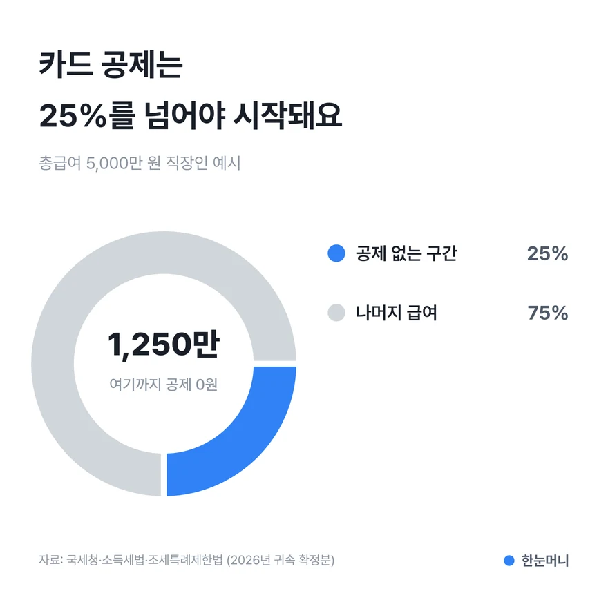
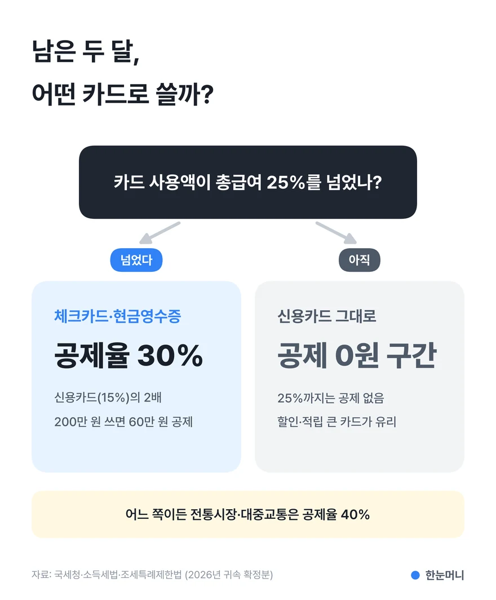
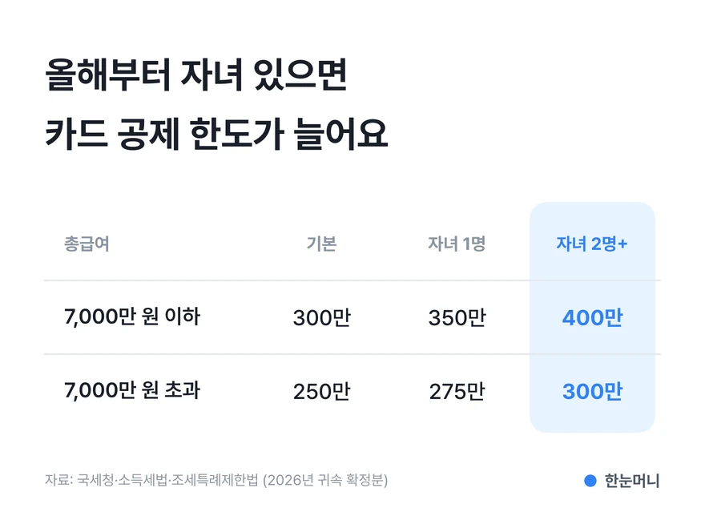
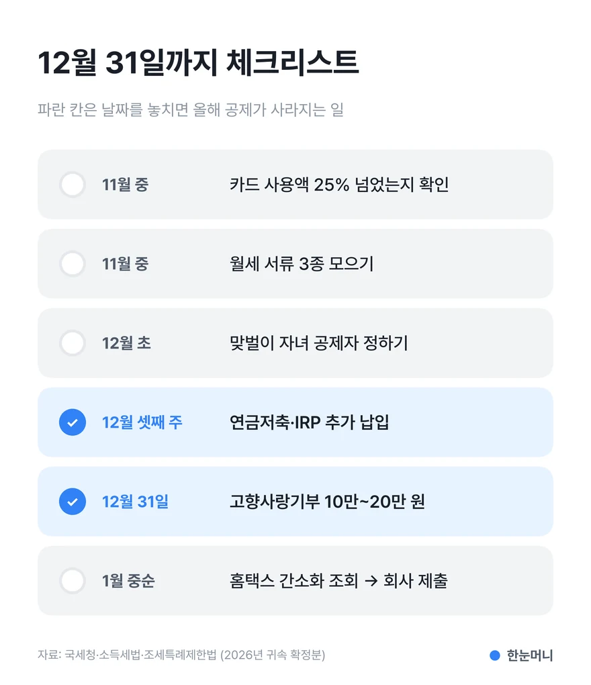

2026 연말정산 미리보기｜12월 31일 전에 해야 환급 늘어나는 5가지

- 연말정산 환급액은 1월이 아니라 12월 31일에 거의 정해집니다.
- 가장 큰 건 연금저축·IRP: 최대 148.5만 원 환급.
- 올해부터 고향사랑기부 20만 원이 14만 원 공제로 더 유리해졌어요.

1. 연금저축·IRP: 12월 31일 입금분까지
남은 기간 동안 환급액을 가장 크게 바꾸는 항목입니다. 연금저축과 IRP에 넣은 돈은 납입액 자체에 세액공제가 붙어서, 넣는 만큼 환급이 바로 늘어나요.

지금 할 일: 증권사·은행 앱에서 올해 납입액을 확인하고, 900만 원까지 남은 금액을 12월 셋째 주까지 넣으세요. 마지막 날은 이체가 몰립니다.
55세 전에 해지하면 공제받은 금액에 기타소득세(16.5%)가 붙어요. 비상금까지 끌어다 채우지는 마세요.

2. 카드 결제수단: 남은 두 달은 체크카드?
카드 소득공제는 총급여의 25%를 넘게 쓴 금액부터 계산돼요. 25%까지는 어떤 카드로 쓰든 공제가 0원입니다.

| 결제 수단 | 공제율 |
|---|---|
| 신용카드 | 15% |
| 체크카드·현금영수증 | 30% |
| 전통시장·대중교통 | 40% |

총급여 5,000만 원이고 이미 25%(1,250만 원)를 넘겼다면, 남은 200만 원을 체크카드로 쓸 때 공제가 30만 원에서 60만 원으로 늘어요. 세율 15% 구간이면 세금 차이는 약 4만 9,500원입니다.

자녀 요건: 20세 이하, 소득금액 100만 원 이하, 다른 사람의 기본공제를 받지 않은 자녀. 2026년 사용분부터 적용.
3. 고향사랑기부: 20만 원이 유리해졌다
10만 원까지는 원래 전액 세액공제였고, 올해 기부분부터 10만 원 초과~20만 원 구간이 40%로 올랐어요.
| 기부액 | 세액공제 | 실제 부담 |
|---|---|---|
| 10만 원 | 10만 원 | 0원 + 답례품 |
| 20만 원 | 14만 원 | 6만 원 + 답례품 |
답례품은 기부액의 30% 이내. 20만 원이면 6만 원 상당까지 받을 수 있어 사실상 부담이 거의 없어요. 주민등록상 사는 지역에는 기부할 수 없습니다.
4. 월세 세액공제: 서류는 지금
월세 60만 원(연 720만 원), 총급여 5,000만 원이면 약 122만 4천 원이 공제돼요. 올해부터는 주소가 다른 주말부부도 요건을 갖추면 각자 공제받을 수 있습니다(부부 합산 1,000만 원 한도).
- 임대차계약서 사본계약서 주소와 등본 주소가 같아야 해요.
- 주민등록등본전입신고가 되어 있어야 합니다.
- 월세 이체 내역계좌이체 기록을 1년 치 모아 두세요.
5. 부양가족·자녀: 올해 바뀐 3가지
| 항목 | 2026년 귀속 변경 |
|---|---|
| 예체능 학원비 | 9세 미만·초2 이하 자녀 미술·음악·체육 학원비 교육비 공제(15%) |
| 자녀세액공제 | 대상 9세 이상으로 조정, 첫째 25만·둘째 30만·셋째부터 40만 원 |
| 카드 공제 한도 | 자녀 수에 따라 최대 100만 원 추가 |
맞벌이라면 자녀 기본공제를 누가 받을지 먼저 정하세요. 카드 자녀 한도와 자녀세액공제가 모두 그쪽에 붙어요.
6. 12월 31일까지 체크리스트

자주 묻는 질문
연금저축을 12월 31일 오후에 넣어도 되나요?
올해 계좌에 실제 입금된 금액만 인정돼요. 금융사마다 연말 마감 시간이 다를 수 있어 며칠 여유를 두는 게 안전합니다.
연금저축과 IRP 중 어디부터 채우나요?
공제율은 같아요. 연금저축은 600만 원까지라 900만 원을 다 채우려면 최소 300만 원은 IRP에 넣어야 합니다.
카드 사용액이 25%를 못 넘으면요?
카드 소득공제는 0원이에요. 공제보다 할인·적립 혜택이 큰 카드로 쓰는 게 유리합니다.
빠뜨린 공제는 어떻게 하나요?
5월 종합소득세 신고 때 추가하거나, 5년 안에 홈택스 경정청구로 돌려받을 수 있어요.
뉴스에 나온 세법개정안도 올해 적용되나요?
정부가 9월에 발표한 개정안은 국회 통과 전이라 이 글에 넣지 않았어요. 확정되면 따로 정리할게요.
※ 2026년 11월 기준, 2026년 귀속 연말정산에 확정된 내용입니다. 개인 상황에 따라 공제액은 달라질 수 있으니 홈택스와 회사 담당자에게 최종 확인하세요. 특정 금융상품 가입 권유가 아닙니다.